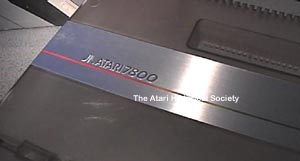
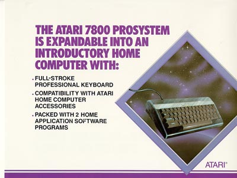
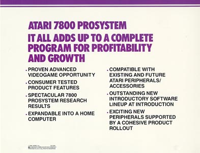
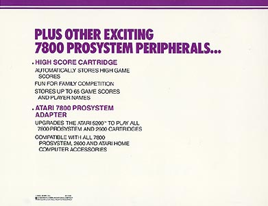

Atari had very big plans for the Atari 7800. They wanted to do it and do it right, many new and exciting ideas and products were being prepared for the Atari 7800's big introduction. Atari had learned its lessons from the huge drop in sales on its Atari 2600 line caused by all the Colecovision hype.

The Original Label
of the Atari 7800 is
quite different
then the released versions
Also Atari had learned from its Atari 5200 introduction with its lack-luster
titles and poorly engineered controllers. The Atari 7800
was shaping up within Atari in 1984 as its new hot killer console.
Had Atari under Warner Communications released the Atari 7800 with its
usual high volume marketing campaign of blitzing the media with TV and
magazine Ads, the Atari 7800 would have put Atari right back on the top.
However the spotlight and the glitz were not meant for the Atari 7800.
With all its new features and upcoming peripherals, the ill-timing of Atari
changing hands to the Tramiel's marked the 7800's death.

Instead of the spotlight and the glitz and hype, the Atari 7800 became a shelved warehouse resident for almost 2 1/2 years, sitting patiently while the world of videogames was being reshaped by Nintendo and Sega. When the Atari 7800 finally did appear, it came out of the gate limping... Its high score cartridge was canned, its compatibility module for the Atari 5200 was canned, its computer Keyboard add-on was also canned.
Many titles which were planned were not introduced until much later and
with no media coverage, almost everyone who saw the Atari 7800 thought
that Atari was out of business because of the lack of TV and magazine advertising
and simply looked at the Atari 7800 and moved on. It was the
Nintendo Entertainment System that everyone wanted and now it was joined
by the Sega Master System, other systems were starting to pop up onto the
scene as well. The Atari 7800's chance at being ontop was no
where in site.


BACK | VIDEO GAMES | MAIN MENU